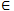

MARIO là một trò chơi rất quen thuộc với các bạn trẻ. Trong trò chơi, muốn kết thúc một cửa chơi, MARIO phải nhảy để kéo một lá cờ từ đỉnh xuống dưới chân cột cờ.
Trong phiên bản mới, MARIO đang ở bờ bên trái sông còn cột cờ được đặt tại bờ bên phải sông, trên sông có N chiếc cọc gỗ để giúp MARIO sang sông. MARIO có thể nhảy di chuyển từ cọc i bước sang cọc i + 1, hoặc nhảy sang cọc i + 2 hoặc nhảy sang cọc i + 3. Tuy nhiên, người thiết kế trò chơi có làm khó người chơi bằng cách thiết kế một vài chiếc cọc lung lay, vài chiếc cọc khác lại bị mục nát.
- Với một chiếc cọc i lung lay: MARIO chỉ có thể bước từ cọc i – 1 tới cọc i, và từ cọc i chỉ có thể bước sang cọc i + 1 hoặc nhảy sang cọc i + 2.
- Với một chiếc cọc bị mục nát: MARIO không thể đứng trên đó vì nó sẽ gãy và MARIO sẽ bị rơi xuống sông.
- MARIO chỉ có thể đi tiến lên phía trước chứ không thể lùi lại khi đi trên cọc để qua sông.
Cu Tý nhà ta đã rất nhiều lần qua được sông, vì cậu là một game thủ siêu hạng. Tuy nhiên, lần này cậu lại nảy sinh ý nghĩ là phải qua sông theo một cách thật độc đáo để cho đám bạn phải thán phục, vì vậy cậu muốn biết có bao nhiêu cách để qua được sông, từ đó mới chọn ra cách độc đáo nhất. Bạn hãy lập trình, trả lời câu hỏi giúp Cu Tý.
Dữ liệu nhập:
- Dòng 1: Chứa số nguyên dương N (1 ≤ N ≤ 1000)
- Dòng 2: chứa N số nguyên A1, A2, ..., AN, với Ai  {0, 1, 2}. Trong đó:
+ Ai = 0: Nếu cọc i là cọc tốt
+ Ai = 1: Nếu cọc i là cọc lung lay
+ Ai = 2: Nếu cọc i là cọc bị mục
Kết quả:
- Là số lượng cách đi để có thể qua sông. Do số lượng này rất lớn nên chỉ cần in ra 9 chữ số cuối (mod 109)
Lưu ý: bờ trái và bờ phải có chức năng tương tự như cọc tốt.
- Ví dụ 1: MARIO sẽ có 2 cách đi như sau:
+ Cách 1: Từ bờ bên trái bước đến cọc 1, từ cọc 1 nhảy đến cọc 4, từ cọc 4 bước sang bờ bên phải
+ Cách 2: Từ bờ bên trái bước đến cọc 1, từ cọc 1 bước sang cọc 2 từ cọc 2 nhảy sang cọc 4, từ cọc 4 bước sang bở bên phải.
- Ví dụ 2: MARIO không thể qua sông vì: từ bờ có thể đến cọc 1, cọc 2:
+ Từ cọc 1, không thể sang cọc 3 (vì cọc 3 mục), không thể sang cọc 4 (vị cọc 4 lung lay nên chỉ có thể bước từ cọc 3 sang)
+ Từ cọc 2, không thể sang cọc 3 (vì cọc 3 mục), không thể sang cọc 4 (vị cọc 4 lung lay nên chỉ có thể bước từ cọc 3 sang), không thể sang cọc 5 (vì cọc 5 mục)